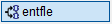
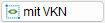
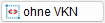

Verlegung aus Verband/Block herauslösen.
·Beim Entflechten wird eine Kopie der Auszugsform erstellt. Die Auszugsform kann mit den Funktionen [Formst/Formma | BiForm → ändTlg/DehFor] geändert werden, ohne dass alle übrigen Verlegungen von den Änderungen betroffen sind.
·Ist eine Position mehrfach verlegt, wird die Summe der verlegten Stäbe an der Auszugsform angeschrieben. Änderungen der Form über [Formst/Formma | BiForm → ändTlg/addTlg] oder [Formst | BewDeh → DehBew] werden bei allen Verlegungen dieser Form übernommen.
Zusatzauszüge [ZusAus]
Zusatzauszüge dienen dazu, die Biegeform einer Verlegung in schematischer Weise ergänzend zum eigentlichen Stahlauszug darzustellen. Neben der gestrichelt und vereinfacht dargestellten Biegeform werden die Positionsnummer, die Stückzahl und der Durchmesser angegeben. Besonders auf umfangreichen Plänen mit einer hohen Anzahl von Positionen stellen Zusatzauszüge wertvolle Hilfsmittel dar.
Die Stiftnummer für Zusatzauszüge kann unabhängig von der Stiftnummer für Originalauszüge eingestellt werden. [Option | SysDat | Formstahl → Auszug Rundstahl/Formmatte].
Kopie eines Auszugs mit eigener Positionsnummer erstellen
Es entsteht eine Kopie des ursprünglichen Formauszugs mit einer neuen Positionsnummer. Die Anzahl der ausgewählten Verlegung oder Verlegungen wird von der Anzahl am ursprünglichen Auszug abgezogen.
§Wählen Sie im Funktionsbereich die Option .
§Wählen Sie im Funktionsbereich eine der folgenden Optionen:
 |
Verknüpfungen werden automatisch mit ausgewählt und bleiben nach dem Herauslösen erhalten. |
 |
Alle Verknüpfungen der Position werden nach dem Herauslösen aufgehoben. |
§Klicken Sie einen Stab der Verlegung an, die aus der bisherigen Position bzw. Form herausgelöst werden soll. [Welche Verlegung(en)? (X/X ausgewählt)].
Es werden alle verknüpften Verlegungen (mit VKN) oder nur die angeklickte Verlegung (ohne VKN) mit der Positionierung markiert.
In beiden Fällen werden die weiteren Verlegungen der Position in ihrer Originalfarbe angezeigt. Nur diese Elemente können noch ausgewählt werden. In der Abfrage wird die Gesamtanzahl der Verlegungen sowie die Anzahl bereits ausgewählter Verlegungen angezeigt: (X/(von)X ausgewählt). Klicken Sie bei Bedarf, und falls vorhanden, weitere Verlegungen an, die herausgelöst werden sollen.
§Bestätigen Sie die Auswahl mit Rechtsklick.
§Führen Sie einen der folgenden Schritte aus. [Neue Lage].
a)Um die Auszugsform auszurichten, klicken Sie unter der Abfrage auf .
§Geben Sie den Dreh-Winkel ein und bestätigen Sie mit der Eingabetaste. [Dreh-Winkel]. §Geben Sie den Spiegel-Winkel ein oder nutzen Sie die unter der Abfrage stehenden Ausrichtungsoptionen. [Spiegel-Winkel]. |
b)Setzen Sie die Kopie des Auszuges per Mausklick an der gewünschten Stelle ab.
Optionen zum Absetzen im Funktionsbereich
OrAu |
Der neue Auszug kann an beliebiger Stelle platziert werden. |
OrAn |
Es kann entweder horizontal oder vertikal verschoben werden. Bezugspunkt der Verschiebung ist der angeklickte Stab. Alternativ: Halten Sie die Umschalttaste beim Platzieren gedrückt. |
OrLi |
Der Auszug wird orthogonal zur angeklickten Linie (=Stab) verschoben. (Nicht bei Kreisbögen). |
Um eine gestrichelte Auszugsform (Zusatzauszug) zu erzeugen
Es entsteht eine gestrichelte Verlegeform. Die Verlegeform ist kein zusätzlicher Auszug!
§Wählen Sie im Funktionsbereich die Option .
§Klicken Sie die Verlegung oder Verlegungen an, für die eine gestrichelte Darstellung der Verlegeform erzeugt werden soll. [Welche Verlegung(en)? (X/X ausgewählt)].
Die angeklickte Verlegung wird markiert. Alle weiteren Verlegungen der Position werden in ihrer Originalfarbe angezeigt. Nur diese Elemente können noch ausgewählt werden. In der Abfrage wird die Gesamtanzahl der Verlegungen sowie die Anzahl bereits ausgewählter Verlegungen angezeigt: (X/(von)X ausgewählt). Klicken Sie bei Bedarf, und falls vorhanden, weitere Verlegungen an, die dem Zusatzauszug hinzugefügt werden sollen. Alle Verknüpfungen der zuerst angeklickten Verlegung bleiben nach dem Bestätigen der Aktion erhalten.
§Drücken Sie nach der letzten Verlegung die rechte Maustaste.
Die Anzahl stellt die Summe der Stäbe in den angeklickten Verlegungen ohne Berücksichtigung der Bauteil- und Verlegefaktoren dar.
§Gehen Sie wie bei [NeuAus] beschrieben weiter vor. [Neue Lage].
|
Hinweis: |
|
Wenn die zusätzliche, gestrichelte Auszugsform gelöscht werden soll, verwenden Sie die Funktion [Formma | VeForm | lösche]. |